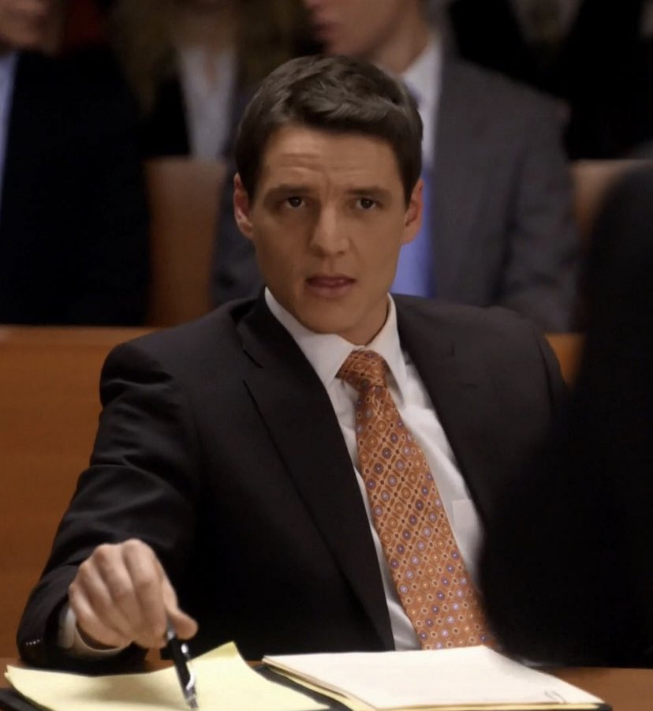

Din Djarin

Din Djarin, vulgarmente conhecido como "o Mandaloriano" ou "Mando", era um Mandaloriano Humano que trabalhou como caçador de recompensas durante a Era da Nova República. Com sua armadura Mandaloriana e seu distinto capacete beskar, Djarin estava bem equipado e enigmático—um estranho cujo passado estava envolto em mistério para os outros. Órfão e criado como rejeitado, ele foi treinado para se tornar um guerreiro Mandaloriano e, eventualmente, ingressou na Tribo, que operava em Nevarro. Djarin ficou endurecido pela batalha, um homem de poucas palavras e um caçador formidável em uma galáxia cada vez mais perigosa. Além das suas habilidades de pilotagem e combate, Djarin mostrou certo nível de fluência em diversos idiomas, incluindo Básico Padrão Galáctico, Mando'a, Jawês, língua Tusken de sinais e Huttês.
Joel Miller

Joel Miller é um personagem fictício da franquia de jogos eletrônicos The Last of Us, da Naughty Dog. No primeiro jogo, Joel é encarregado de acompanhar a jovem Ellie em um Estados Unidos pós-apocalíptico, na tentativa de criar uma cura potencial para uma infecção à qual Ellie é imune.
Oberyn Nymeros
Oberyn Nymeros Martell, conhecido como a Víbora Vermelha, é um nobre dornês e o temperamental irmão mais novo do Príncipe Doran. Possui oito filhas bastardas, chamadas de Serpentes da Areia, as quatro mais novas filhas de sua atual amante, Ellaria Sand. Dizem alguns rumores que ele é bissexual. Na série de televisão foi interpretado pelo ator Pedro Pascal
Marcus Pike

O agente especial Marcus Pike é um agente do FBI do Art Squad no sexto andar da sede do FBI em Austin, Texas. Pike apareceu pela primeira vez em Violets como um dos agentes que investigavam o roubo de arte. Ele foi interpretado por Pedro Pascal .
Javier Peña

Javier Peña é um ex-agente americano da DEA que fazia parte do Bloco de Busca e foi enviado à Colômbia para caçar o Cartel de Medellín e o Cartel de Cali . Depois de perceber que a Guerra às Drogas não pode ser vencida, ele quebrou protocolos e revelou a profunda corrupção envolvida no governo colombiano, a ligação do presidente Ernesto Samper com o Cartel de Cali e o fato de que os Estados Unidos, apesar de saberem disso, não t agir sobre isso. Seu anúncio causou escândalo na Colômbia e nos Estados Unidos e, para evitar repercussões, ele se demitiu do DEA e foi morar no rancho de seu pai na fronteira mexicano-americana.
Maxwell Lord IV

Maxwell Lord IV é um supervilão que aparece nos quadrinhos americanos publicados pela DC Comics. O personagem apareceu pela primeira vez em Justice League #1 e foi criado por Keith Giffen, J. M. DeMatteis e Kevin Maguire.
Dave York

David "Dave" York é o principal antagonista de The Equalizer 2 . Ele é um agente da CIA que se tornou assassino autônomo e ex-amigo e parceiro que se tornou inimigo de Robert McCall.
Nathan Landry
Nathan Landry (interpretado pelo ator Pedro Pascal) é um procurador assistente do estado que apareceu nas duas primeiras temporadas de The Good Wife .
Juan Badillo
Juan Badillo era o oficial de controle do FBI para a investigação de Mike Warren sobre Paul Briggs . Enquanto finalmente confronta Briggs sobre suas suspeitas, um Briggs bêbado atira e mata Badillo, que está com o rosto coberto e está usando um molho de chaves para fazer Briggs pensar que ele é Jangles , em uma pequena confusão. Briggs puxa a máscara de Badillo e comenta que ele não parece diferente de um ser humano normal. Ele dirige para uma área desconhecida e enterra "Jangles" sem saber que Badillo era um agente do FBI.
Javi Gutierrez

Pedro Pascal como Javi Gutierrez, um bilionário e superfã de Cage que paga a Cage US$ 1 milhão para aparecer em sua festa de aniversário.
Pietro Alvarez

Pietro Alvarez é o nome dado a esse personagem interpretado por Pedro Pascal.